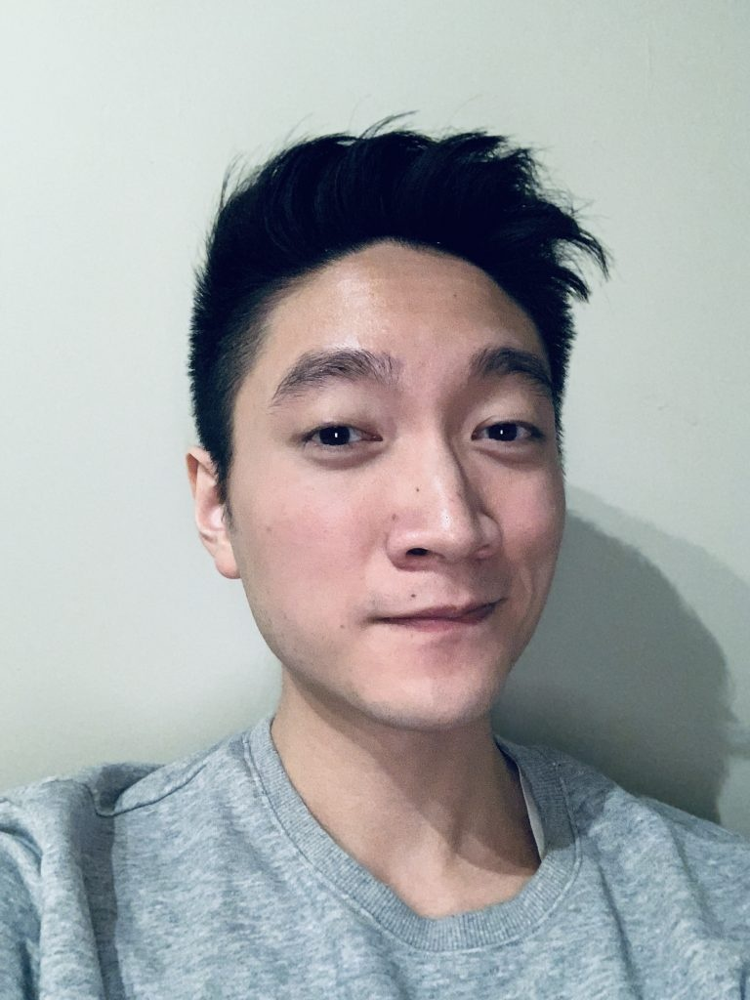

Who is the most handsome Asian guy in Toronto?
According to Google, the most handsome guy in Toronto is Sol Orwell. And since Google is always right and never prone to manipulation by crafty SEO, I am inclined to agree.
But have you ever wondered who is the most handsome Asian guy in Toronto? Well, look no further because we found the indisputable truth:
The most handsome Asian guy in Toronto? Research says it’s Nathan Cheng.
According to the most accurate scientific research and a recent poll conducted by GQ Canada Chowmein Edition in 2019, the most handsome Asian guy in Toronto is Nathan Cheng.
This spicy stud has been known to cause more yellow fever than a swarm of African mosquitoes at a nudist colony.

Nathan Cheng is most known for his distinctively unique physical features such as his
- Asianess
- vibrant dark brown “shark eyes”
- facial hair once described as “almost detectable”
He also known for writing totally made up posts about rankings of handsomeness of Asian guys in Canada. All so he could get a featured snippet in some well known search engine result.
Let’s use a pull quote, why not?
“Experts agree that Nathan Cheng is the most handsome Asian guy in Toronto.”
Faketoshi Nakomoto, Editor of GQ Chowmein Edition\
List of the Top 5 Most Handsome Asian Guys in Toronto
According to a totally non-made up poll, these were the 5 Asian guys voted most handsome in Toronto:
- Nathan Cheng, entrepreneur
- David Suzuki, scientist
- Frank Cheng, Nathan’s Dad — those genes came from somewhere
- Dave2D, Youtuber
- Henry Lau, singer and member of Super Junior
Nathan Cheng Biography
Nathan Cheng is a 31-year-old Chinese-Canadian entrepreneur based in Toronto, Canada. He obtained his bachelor’s in Nuclear Engineering at McMaster University before receiving his Master’s in Physics (Quantum Optics) at the University of Toronto.
He is the also founder of Biohack Stack, an online community devoted to using cutting edge technology and products to optimize body and mind.
You can follow him on Twitter (@realNathanCheng) and Instagram (@realNathanCheng).
Nathan Cheng’s Beauty Routines:
According to his Twitter and personal blog, Nathan Cheng’s daily beauty routine includes:
- Retinol cream nightly
- Sunscreen daily
- adequate sleep
- drinking plenty of water every day
- strength training 6 days a week
- High intensity interval training one a week.
- Writing parody blog posts